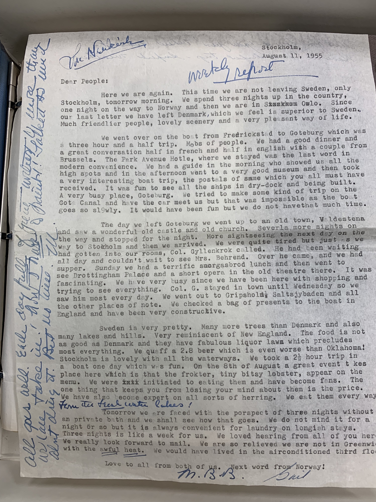
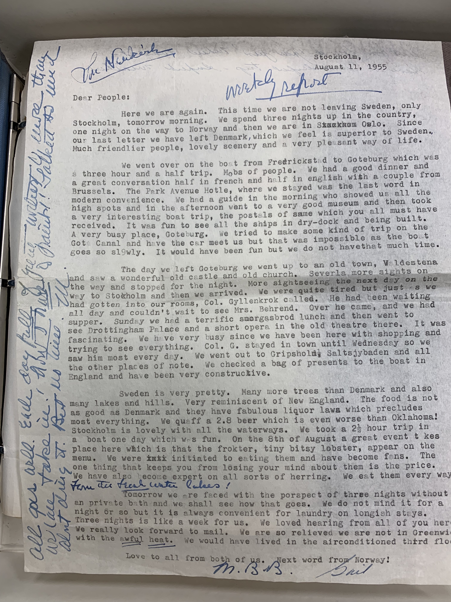

Source document options
Review the following options to work on for the semester project. Then visit our Google Doc sign-up sheet to indicate your first, second, and third choices.
- A. Behrend Archives Options for the 75th Anniversary of Penn State Erie, The Behrend College
(Visit Lilley Library 13 to inspect these in person)- The founding of Penn State Erie (1940s and 50s): letters and notes
Let's compile a list of people and organizations to reference and highight in these documents.
Which people, businesses, other organizations were involved? What events, technologies, courses of study, etc. were of interest to them? - A selection of Mary and Ernst Behrend’s (mostly typewritten) travel letters from Europe, 1950s (multiple projects possible):
When and where did they travel, and what did they experience? 

- The founding of Penn State Erie (1940s and 50s): letters and notes
- B. Online facsimile options
- Harlem Renaissance Anthology: Joint project with Framingham State U.
We need a team interested in African American poetry and possibly music.
We'll help customize a schema and transform portions of The New Negro anthology edited by Alain Locke 1925) on the Internet Archive (example passage with music here) to make a web edition.
We have a text transcript already, but we need to help clean it up for coding. A little music encoding of short pieces (like this story + tune of Br'er Rabbit) and output to .midi or .wav sound files is possible. - Picture book: encoding text and images, tracking motifs: Hilaire Belloc, illustrated Cautionary Tales for Children
- Picture book: encoding text and images, tracking motifs (late-breaking option): Alice's Adventures Underground, illustrated by the author (Lewis Carroll) This is Lewis Carroll's earliest form of the Alice in Wonderland novel, and the illustrations were made by him.
- Picture book: encoding text and images, tracking motifs (late breaking option): Mary Gilbert, or, A peep at the elephant : with elegant engravings, published 1833 A children's book from 1833 about a child's encounter with an elephant, with discussion of large animals.
- Contribute to Dr. B’s Digital Mitford project: Mary Russell Mitford's journal typescript:
- Continue coding an existing TEI XML file, consulting the typescript (and occasionally checking the original handwritten journal with Dr. B where the transcript raises questions)
- Work with our ready-made Digital Mitford project customization of the TEI
- Harlem Renaissance Anthology: Joint project with Framingham State U.